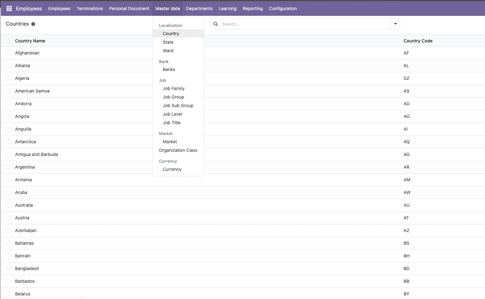
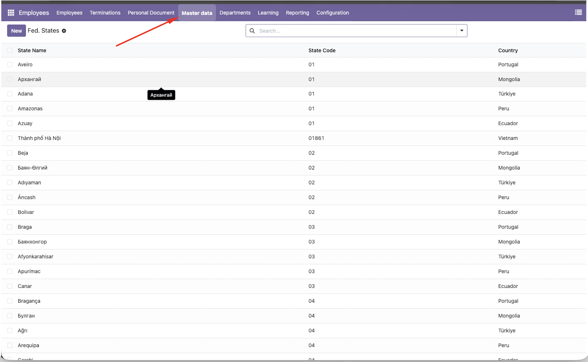
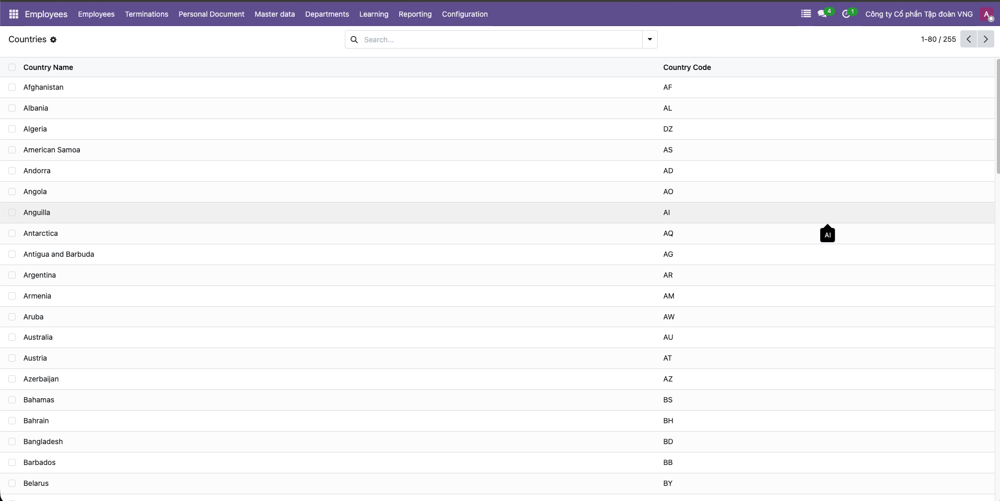
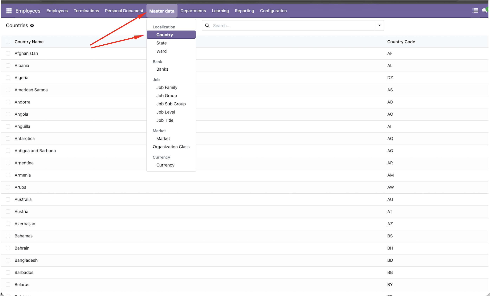

Active Menu Highlight keeps the selected backend menu visible while users move between list, form, and dropdown actions. It adds a clear active state to the current navbar section and dropdown menu item across all backend menus in Odoo 19.
Active Top MenuThe parent navbar tab stays highlighted when the current action belongs to that menu section. |
Active Dropdown ItemDropdown entries get a visible active state, making nested backend menus easier to scan. |
All Backend MenusWorks across Odoo backend menus with no extra setup, no models, and no external service. |
Compare the default Odoo navigation with the active menu highlight enabled.
Before |
After |
Before |
After |
|
|
Copy the module to your addons path, update the apps list, then install Active Menu Highlight. The active menu behavior is available immediately.